	<!-- study -->
	<article class="content study_area">
		<style>
			.content{
				margin-top:0;
				text-align:center; font-size:50px;
			}
			.back_two{
				background-image:url(../portfolio/img/backgroundphoto2.png);
				background-repeat:no-repeat;
				background-size:cover;
				background-attachment:fixed;
				background-size:2300px 1166px;
				background-position:50% 50%;
				padding:926px 0 0 0;
			}
			.introduce{
				width:85%;
				margin:0 auto;
			}
			.introduce .widthtwo{

			}
			.introduce .widthtwo .top_posi{
				position:fixed;
				width:1050px;
				height:200px;
				top:33%;
				left:50%;
				transform:translate(-50%,-50%);
			}
			.introduce .widthtwo .top_posi .another{
				float:left;
				width:200px;
				height:400px;
				font-size:24px;
				font-weight:600;
				color:#fff;
				text-align:center;
				margin-top:80px;
				margin-left:30px;
				margin-right:30px;
				line-height:26px;
			}
			.introduce .widthtwo .top_posi .another img{
				margin-left:-9px;
				margin-bottom:20px;
			}
			.introduce .widthtwo .top_posi .another img:hover{
				transform:rotate(10deg);
			}
			.introduce .widthtwo .top_posi .another span{
				font-size:14px;
				font-weight:900;
				font-family:'맑은 고딕';
				color:#ddd;
			}
			@media(max-width:1280px){
				.introduce{
					width:85%;
				}
				.introduce .widthtwo .top_posi{
					width:890px;
					top:43%;
				}
				.introduce .widthtwo .top_posi .another{
					height:300px;
					margin-left:10px;
					margin-right:10px;
				}
				.introduce .widthtwo .top_posi .another img{
					width:180px;
					height:180px;
					margin:0 auto;
					margin-bottom:20px;
				}
			}
			@media(max-width:768px){
				.container {
					padding-top:50px;
				}
				/* max-width 640 두번째 페이지 */
				.introduce .widthtwo .top_posi{
					position:fixed;
					top:63%;
					width:440px;
					height:750px;
				}
				.introduce .widthtwo .top_posi .another{
					width:200px;
					height:310px;
					font-size:20px;
					margin:0 auto;
					margin-top:0;
					line-height:23px;
				}
				.introduce .widthtwo .top_posi .two,
				.introduce .widthtwo .top_posi .four{
					margin-left:30px;
				}
				.introduce .widthtwo .top_posi .another img{
					width:180px;
					height:180px;
				}
				.introduce .widthtwo .top_posi .another span{
					font-size:12px;
				}
				/* max-width 640 두번째 페이지 */
			}
			@media(max-width:640px){
				.back_two{
					background-image:url(../portfolio/img/backgroundphoto_small2.png);
					background-size:640px 768px;
					padding:740px 0 0 0;
				}
			}
			@media(max-width:480px){
				.introduce .widthtwo{
					width:480px;
				}
				.introduce .widthtwo .top_posi{
					width:310px;
					height:620px;
				}
				.introduce .widthtwo .top_posi .another{
					width:140px;
					height:260px;
					font-size:20px;
					margin:0 auto;
					line-height:20px;
				}
				.introduce .widthtwo .top_posi .another:nth-child(1),
				.introduce .widthtwo .top_posi .another:nth-child(2){
					margin-top:20px;
				}
				.introduce .widthtwo .top_posi .another:nth-child(3),
				.introduce .widthtwo .top_posi .another:nth-child(4){
					margin-top:-30px;
				}
				.introduce .widthtwo .top_posi .two,
				.introduce .widthtwo .top_posi .four{
					margin-left:30px;
				}
				.introduce .widthtwo .top_posi .another img{
					width:130px;
					height:130px;
				}
				.introduce .widthtwo .top_posi .another span{
					font-size:11px;
				}
			}
			@media(max-width:320px){
				/* max-width 320 두번째 페이지 */
				.introduce .widthtwo{
					width:320px;
				}
				.introduce .widthtwo .top_posi{
					width:280px;
					height:520px;
				}
				.introduce .widthtwo .top_posi .another{
					width:130px;
					height:210px;
					font-size:17px;
					line-height:18px;
					margin:0 auto;
				}
				.introduce .widthtwo .top_posi .two,
				.introduce .widthtwo .top_posi .four{
					margin-left:20px;
				}
				.introduce .widthtwo .top_posi .another img{
					width:110px;
					height:110px;
					margin-bottom:10px;
				}
				.introduce .widthtwo .top_posi .another span{
					font-size:9px;
				}
				.introduce .widthtwo .top_posi .another:nth-child(1),
				.introduce .widthtwo .top_posi .another:nth-child(2){
					margin-top:0;
				}
				.introduce .widthtwo .top_posi .another:nth-child(3),
				.introduce .widthtwo .top_posi .another:nth-child(4){
					margin-top:-10px;
				}
				/* max-width 320 두번째 페이지 */
			}
		</style>
		<div class="section back_two">
			<div class="introduce">
				<div class="widthtwo">
					<ul class="top_posi">
						<li class="another one">Creative<span><br>창조하는 것,<br> Thinking 을 나는 좋아한다.</span></li>
						<li class="another two">Design<span><br>디자인하는 것,<br> Design 을 나는 좋아한다.</span></li>
						<li class="another three">Art<span><br>무언가를 그리는 것,<br> Art 를 나는 좋아한다.</span></li>
						<li class="another four">Photo<span><br>무언가를 찍는 것,<br> Photo 를 나는 좋아한다.</span></li>
					</ul>
				</div>
			</div>
		</div>
	</article>

